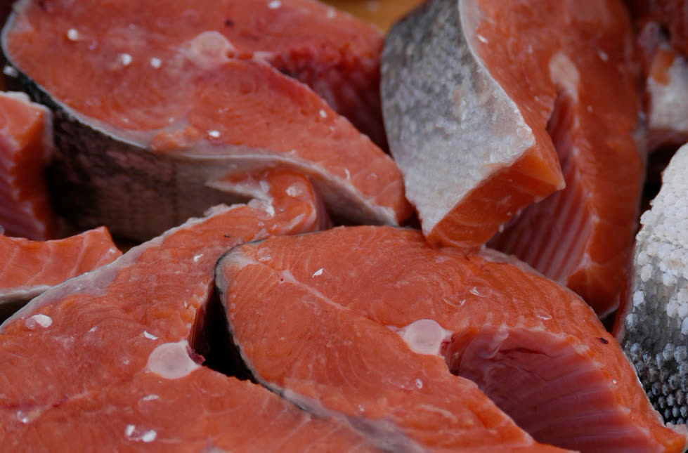
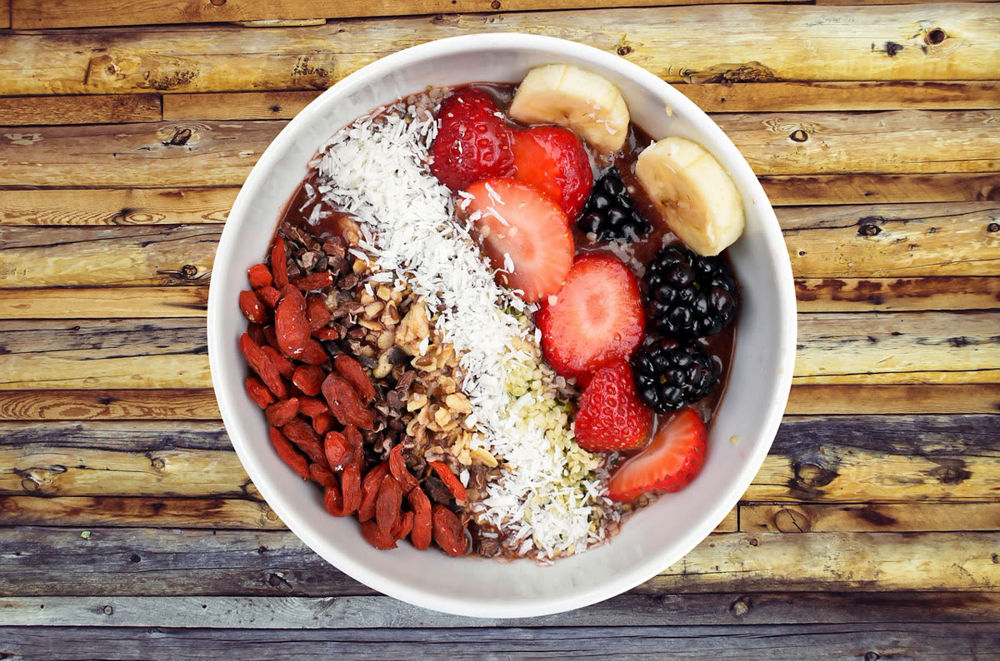
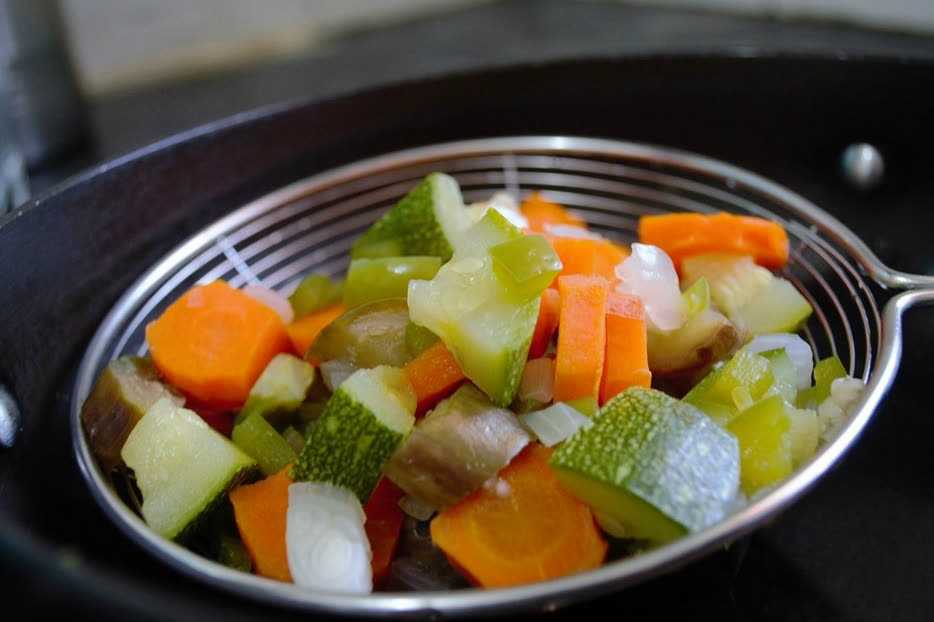

Nutrición
PREPARANDO MENÚS SANOS Y EQUILIBRADOS
En TERKOR –empresa de catering especializada en colegios y colectividades- preparamos a diario miles de menús para nuestros clientes –colegios y residencias en toda la Comunidad de Madrid-; y una cualidad que velamos día a día para que se cumpla es que deben ser menús sanos y equilibrados. Ahora bien, ¿qué significa preparar un menú bajo esa dualidad?
Principalmente el equilibrio se consigue incorporando la mayor cantidad posible de macronutrientes a partes iguales en cada menú. A saber: proteínas, carbohidratos y grasas; sin olvidar del trinomio formado por las vitaminas, minerales y fibra. No obstante, y a la hora de preparar en las cocinas de TERKOR los menús de todos nuestros clientes, un dato a tener en cuenta es la edad de los comensales: por edades, no precisa las mismas necesidades calóricas un señor de 50 años que un niño de 14 años; y –del mismo modo- el joven precisará más alimentos ricos en vitaminas del grupo B y E, el potasio, el magnesio, el fósforo y el zinc.

Así pues, dentro del apartado proteínico, en TERKOR las desglosamos según su procedencia: pueden provenir del pescado azul (recomendamos 1 día a la semana), pescado blanco (entre 2 y 3 días), carnes rojas (1 día), legumbres (2 días a la semana) y huevos (máximo 4 unidades; mejor cocidos, no fritos).
Respecto a los hidratos de carbono, éstos tienen una función energética (cada gramo aporta 4 kcal). Hay que tener en consideración que la glucosa es la única fuente de energía para el cerebro, consumiendo en torno a 100 gramos al día. Podemos encontrar hidratos de carbono en alimentos como cereales (arroz, trigo, maíz, cebada, centeno, etc.), que a su vez los veremos en pan, arroz, pasta, cereales de desayuno, etc. También los podremos ver en ciertas legumbres como los garbanzos, lentejas, judías o guisantes (con un contenido en carbohidrato por encima del 50%) y, en menor medida, en frutas y verduras.

Al referirnos a las grasas, hay que diferenciar aquellos ácidos grasos saturados (los hallamos en grasas animales) de los ácidos grasos insaturados (o poliinsaturados, y que encontramos en las grasas vegetales). Así, es recomendable preparar alimentos con una buena base de polinsaturados, más sanos y saludables. Este tipo de grasas las podemos encontrar en aceite de oliva y frutos secos (almendras y cacahuetes, principalmente); en determinados pescados, como el salmón o atún; y también en la soja, semillas o garbanzos, entre otros alimentos.

“Resulta altamente aconsejable al menos una vez a la semana efectuar una cena sólo a base de frutas, y que podemos llevar a cabo con una ensalada de frutas variadas”
“En TERKOR vigilamos diariamente que todos los menús ofrezcan un equilibrado balanceo de los macronutrientes esenciales, incrementando determinados alimentos según estacionalidad, como por ejemplo el salmón, aguacates, plátanos y verduras de hojas verde en época de exámenes, pues favorece un mayor rendimiento académico del alumno”, ha señalado Oliver Córdoba, director general de TERKOR. Desde TERKOR recordamos que si bien el desayuno es la comida clave del día, no menos importante es la merienda y la cena, debiendo ser éstas menos copiosas que las dos primeras (desayuno y comida). Así pues, una excelente opción para merendar puede ser ingerir una pieza de fruta (con lo que ayudamos a cumplir esa premisa de “5 piezas de fruta/verdura al día”) acompañado de un yogur (o postre lácteo según conveniencia).

Para los estudiantes la cena debe ser, si cabe, la comida más frugal: de lo que se trata es de evitar que sea pesada pues puede obstaculizar un correcto descanso. Huevos –cocidos o en tortilla- son la mejor opción puesto que aportan muchas proteínas, grasa buena, lecitina y vitaminas A, E, D, B y minerales. De hecho, cada vez más endocrinos, como el doctor Antonio Escribano (médico especialista en Endocrinología, Nutrición y Medicina Deportiva), aconseja al menos una vez a la semana efectuar una cena sólo a base de frutas, y que podemos llevar a cabo con una ensalada de frutas variadas.
En Terkor recordamos la importancia de una buena salud bucodental; animamos a que los colegios recomienden a sus alumnos que se queden a comedor que se limpien los dientes después de cada comida. Además, a partir de cierta edad es conveniente realizar enjuagues bucales con flúor.
Si quieres recibir más información sobre nuestros menús, especiales para alérgicos y dietas específicas, no dudes en contactar con nosotros.